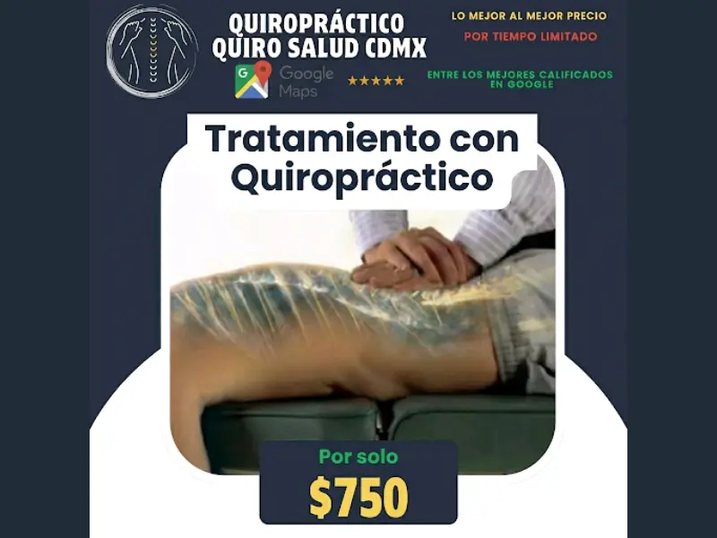
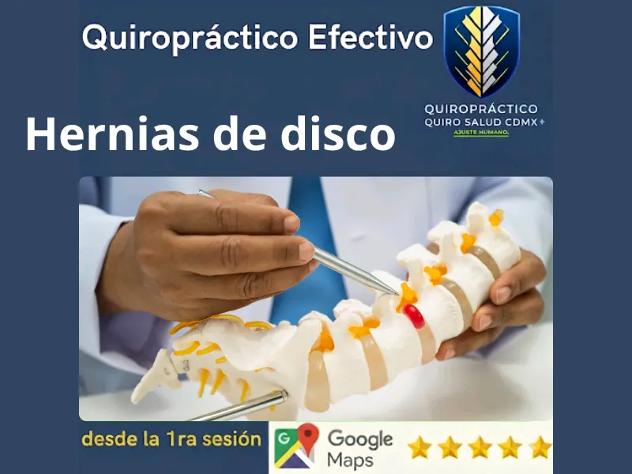
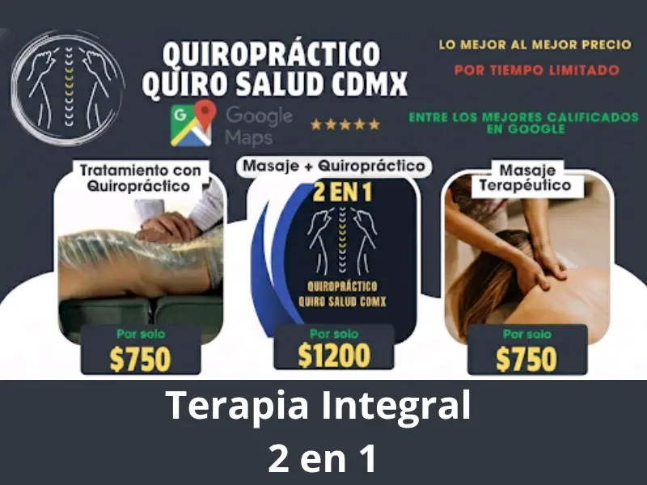
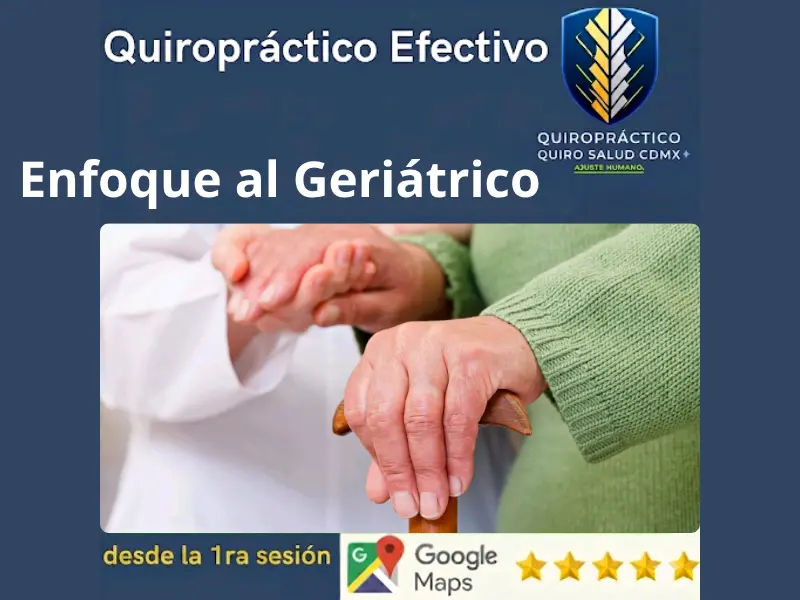

Tratamientos con lógica vertebral.
Cada servicio está diseñado desde la biomecánica, no desde el catálogo comercial. Aquí explicamos el qué y el por qué de cada uno.
Quiropráctica Clínica

Ajuste Vertebral de Alta Precisión
$750 MXN · Valoración inicial sin costoEl ajuste quiropráctico corrige las subluxaciones vertebrales — desalineaciones que generan interferencia en el sistema nervioso y producen dolor, rigidez o pérdida de movilidad. El proceso no es empírico: localizamos el segmento específico que está fallando, aplicamos una fuerza precisa y controlada, y liberamos la restricción articular.
Referencia científica
Rubinstein, S. M., et al. (2019). Benefit-harm analysis of spinal manipulative therapy for low back pain. BMJ, 366, l689. https://doi.org/10.1136/bmj.l689

Descompresión Discal No Invasiva
Incluido en tarifa estándar · $750 MXNDiseñado específicamente para hernias de disco y discos abombados. El disco intervertebral actúa como amortiguador entre las vértebras. Cuando se daña o desplaza, presiona las raíces nerviosas — generando desde dolor lumbar hasta ciática severa. La descompresión crea espacio articular mediante maniobras específicas que reducen esa presión sin cirugía.
Referencia científica
Senna, M. K., & Machaly, S. A. (2011). Does maintained spinal manipulation therapy for chronic nonspecific low back pain result in better long-term outcome? Spine, 36(18), 1427–1437.

Terapia Integral — Masaje + Quiropráctica
$1,200 MXN · Sesión de 75–90 minSesión colaborativa entre masoterapeuta y quiropráctico. Primero se trabaja la musculatura para reducir la tensión acumulada, y sobre esa base relajada se realiza el ajuste quiropráctico. El resultado es una corrección más profunda, menos resistida y con mayor duración del efecto.
Referencia científica
Field, T. (2016). Massage therapy research review. Complementary Therapies in Clinical Practice, 24, 19–31.
Día de Higiene de Columna
$550 MXN · Solo lunes · $520 efectivo/transferenciaAjuste quiropráctico de mantenimiento preventivo, exclusivo los lunes. Para pacientes que ya pasaron por valoración y tratamiento inicial y buscan mantener resultados. El concepto es el mismo que la higiene dental: no esperar a que el dolor regrese para actuar.
Realizar mi pre-valoración (Cuestionario Instinto)Atención diferenciada por perfil.
Quiropráctica Pediátrica
Técnica adaptada · Incluido en tarifa estándarEl sistema musculoesquelético en desarrollo es sensible a hábitos posturales que se establecen en la infancia y adolescencia. El uso prolongado de pantallas genera "text neck" — una carga anormal sobre la columna cervical que, sin corrección, se convierte en problema crónico. La quiropráctica pediátrica no usa las mismas presiones ni técnicas que en adultos: es un protocolo completamente diferenciado, seguro y documentado.
Referencia científica
Alcantara, J., et al. (2009). The safety and effectiveness of pediatric chiropractic. Explore, 5(5), 290–295. · Newell, N., et al. (2017). Biomechanics of the human intervertebral disc. Frontiers in Bioengineering and Biotechnology, 5, 2.

Quiropráctica Geriátrica
$750 MXN · Protocolo adaptadoEn adultos mayores, la prioridad no es la velocidad del ajuste sino la seguridad y la mejora funcional sostenida. Las técnicas utilizadas son de baja amplitud y alta especificidad — no hay maniobras bruscas. El objetivo es mantener movilidad articular, reducir dolor crónico y disminuir el riesgo de caídas mediante mejor propiocepción y equilibrio.
Referencia científica
Whedon, J. M., et al. (2015). Chiropractic care and the risk of adverse events in older patients. BMC Geriatrics, 15, 136. · Holt, K. R., et al. (2016). Effectiveness of chiropractic care in older adults. JMPT, 39(4), 267–275.
Quiropráctica Deportiva
Incluido en tarifa estándarOptimización de la movilidad articular y prevención de lesiones para atletas y personas con actividad física intensa. El cuerpo bajo estrés deportivo acumula micro-restricciones articulares que, sin atención, derivan en lesiones. El ajuste preventivo mantiene el rango de movimiento óptimo y reduce la compensación biomecánica que genera desgaste diferencial.
Realizar mi pre-valoración (Cuestionario Instinto)Manejo de Cefaleas y Migrañas
Incluido en tarifa estándarLas cefaleas de origen cervical son frecuentemente mal diagnosticadas como migraña primaria. La tensión crónica en la musculatura suboccipital y la restricción articular en C1-C2 generan un patrón de dolor referido que se percibe como cefalea. El ajuste en la zona cervical superior reduce la frecuencia e intensidad sin medicación.
Realizar mi pre-valoración (Cuestionario Instinto)Lo que la industria no te dice.
No es crítica. Es información que el paciente merece tener antes de decidir.
Mito de la industria
"Necesitas un mínimo de 10 sesiones para ver resultados."
Protocolo Quiro Salud
No existe un número fijo de sesiones aplicable a todos los casos. Primera sesión paliativa, segunda correctiva según evolución. Asegurar un paquete sin evidencia de respuesta clínica es venta, no medicina.
Mito de la industria
"El ruido del ajuste significa que funcionó."
Protocolo Quiro Salud
El sonido de cavitación es un efecto secundario de la liberación articular, no el objetivo ni el indicador de éxito. Un ajuste silencioso puede ser igual o más efectivo que uno audible.
Mito de la industria
"La quiropráctica puede tratar casi cualquier enfermedad."
Protocolo Quiro Salud
La quiropráctica es efectiva para condiciones musculoesqueléticas y neurológicas periféricas. Si tu caso requiere otro especialista, te lo decimos en la primera consulta y te canalizamos sin rodeos.
¿Cuándo NO atendemos?
Esta sección existe porque la honestidad también incluye saber los límites.
Si tienes dudas sobre si tu caso es candidato, el cuestionario Instinto y la valoración inicial sin costo están diseñados exactamente para eso.
Servicios complementarios.
Quiro Salud CDMX alberga otros especialistas bajo la misma filosofía de atención.
Masoterapia
Masaje terapéutico profesional para descarga muscular y recuperación activa.
Psicología
Atención psicológica clínica. El dolor crónico tiene un componente emocional documentado.
Flebología
Diagnóstico y manejo de varices y úlceras varicosas.
Cirugía Plástica Estética
Procedimientos ambulatorios de cirugía estética.
Spa Facial
Tratamientos faciales y cuidado de la piel.
Para agendar servicios complementarios contacta directamente al 55 4182 6900
El primer paso no cuesta nada.
Valoración inicial sin costo. Sin compromiso. Sin paquetes.